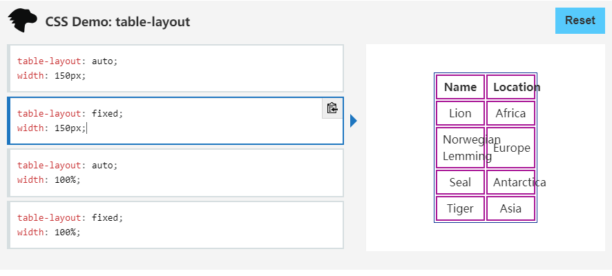

a标签的用法
通过<a>标签，用户点击相应文字后，浏览器会跳转到该文字指定的网址。
比如我通过下面的代码创建了一个连接到百度的超链接：
代码：
<a href="//baidu.com/"></a>
测试代码效果：
百度
点击上面百度两个字后，就会新打开一个浏览器窗口，并跳转到百度。
这就是最典型的链接。
<a>标签内部，不仅可以放置文字，也可以放置其他元素，比如段落、图像、多媒体等等。
下面，是通过图片，链接到百度的代码。
<a href="//baidu.com" target="_blank"><img src="./images/baidulogo.png"
alt="点击进入百度" width="150px"></a>
测试代码效果：

点击上面百度图标后，就会新打开一个浏览器窗口，并跳转到百度。
<a>标签的的常用属性如下：
- href
href属性给出链接指向的网址。它的值应该是一个URL或者锚点。
href属性的值是#加上描点名称，点击后，浏览器会自动滚动到锚点所在位置。
跳转到锚点的代码：
<a href="#content">点击我返回目录</a>
测试代码效果：
点击我返回目录
- title
title属性给出链接的说明信息。鼠标悬停在链接上方时，浏览器会将这个属性的值，以提示块的形式显示出来。
代码：
<a href="" title="我是在title属性中设置的">把鼠标放在我上面试一试</a>
测试代码效果：
把鼠标放在我上面试一试
- target
target属性指定如何展示打开的链接。它可以是在指定的窗口打开，也可以在<iframe>里面打开。
target属性的值也可以是以下四个关键字之一。
- _self：当前窗口打开，这是默认值。
- _blank：新窗口打开。
- _parent：上层窗口打开，这通常用于从父窗口打开的子窗口，或者<iframe>里面的链接。如果当前窗口没有上层窗口，这个值等同于_self。
- _top：顶层窗口打开。如果当前窗口就是顶层窗口，这个值等同于_self。
代码：
<a href="//baidu.com">在本窗口打开百度</a>
<a href="//baidu.com" target="_blank">在新窗口打开百度百度</a>
测试代码效果：
在本窗口打开百度
在新窗口打开百度百度
<a>标签，还有两个特殊的链接是邮件链接和电话链接。
邮件链接
链接可以指向一个邮件地址，当用户点击后，浏览器会打开本机默认的邮件程序，让用户向指定的地址发送邮件。
代码：
<a href="mailto:contact@example.com">联系我们</a>
代码效果：
联系我们
点击“联系我们”，本机默认的邮件程序就会打开，而且收件人就是上面代码设定好的邮箱。
电话链接
链接可以指向一个电话号码，当用户点击后，浏览器会打开本机默认的呼叫程序，让用户向指定的号码拨打电话。如果是手机浏览页面，用户点击该链接，会唤起电话，可以进行拨号。
代码：
<a href="tel:13312345678">13312345678</a>
代码效果：
13312345678
点击上面的电话号码，手机或本机呼叫程序就会打开，可以直接拨打指定号码。
img标签的用法
<img>标签用于插入图片。他是单独使用的，没有闭合标签。

<img src="./images/baidulogo.png" width="150px">
<img src="./images/./images/baidulogo.png" width="150px">
上面代码在网页插入一张图片"baidulogo.png",src表示source,src属性指定图片的网址，或者URL，上面代码的例子使用的是相对URL，表示图片与网页在同一个目录。
<img>标签的的常用属性如下：
- alt属性
alt属性用来设定图片的文字说明。当图片不显示时，图片的位置上会显示该文本。
代码：
<img src="./images/test.jpg" alt="示例图片">
代码效果：

如上面的效果，因为test.jpg实际上并不存在，所以图片不会显示，这时候，图片就会显示出“示例图片”的文字说明。
- width属性，height属性
图片默认以原始大小插入网页，width属性和height属性可以指定图片显示时的宽度和高度，单位是像素或百分比。
代码：
<img src="./images/baidulogo.png" width="150" height="150">
代码效果：
当图片的width属性和height属性被指定了的时候，图片就会按指定的值显示，可以看到，我们指定后的图标显得非常难看，因为比例是错误的，如果只指定一个属性，则另一个属性自动保持比例。
最后，我们看看如何设置图片响应式尺寸，即，图片会根据你的设备尺寸自适应显示尺寸。
代码：
<img src="./images/html.png" style="max-width: 100%;">
代码效果：
上图，通过max-width，设定了图片为按100%显示，因为图片比较大，所以在不同的设备上就会表现为自动匹配。
table标签的用法
<table>是一个块级容器标签，所有表格内容都要放在这个标签里。
<caption>总是table里面的第一个子元素，表示表格的标题。该元素是可选的。
<thead>、<tbody>、<tfoot>都是块级容器元素，且都是<table>的一级子元素，分别表示表头、表体和表尾。
这三个元素都是可选的。
标签<th>、<td>、<tr>，分别表示标题、数据和表格的一行。
代码：
<table>
<tr>
<th>学号</th><th>姓名</th>
</tr>
<tr>
<td>001</td><td>张三</td>
</tr>
<tr>
<td>002</td><td>李四</td>
</tr>
</table>
代码效果：
如上面的代码，每有一行表格，就需要有一个tr标签，在tr标签内部，如果内容是表格的标题，就放在th标签里，如果内容是表格的数据，就放在td标签里。
Table标签的常用样式
- table-layout
table-layout用于设置表格中单元格、行和列的布局。
- auto
表格尺寸会根据内容自适应且等宽。
- auto + 指定宽度
表格尺寸会根据设定值显示，内容会自动换行以确保内容不溢出。
- fix
表格尺寸会根据内容自适应但不等宽。
- fix + 指定宽度
表格尺寸会根据设定值显示，内容如果超出宽度会溢出。

- border-collapse
设定单元格之间是否公用边框。通过下面的效果展示，一目了然。
border-collapse的值为：collapse

border-collapse的值为：separate

- border-spacing
border-spacing可以设置单元格边框的间隔。